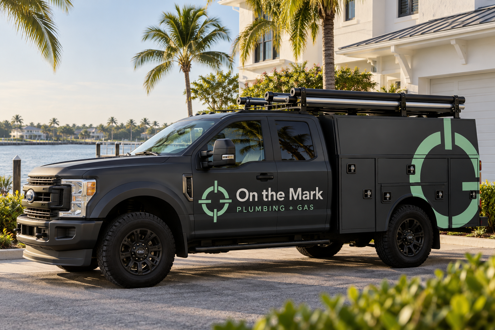
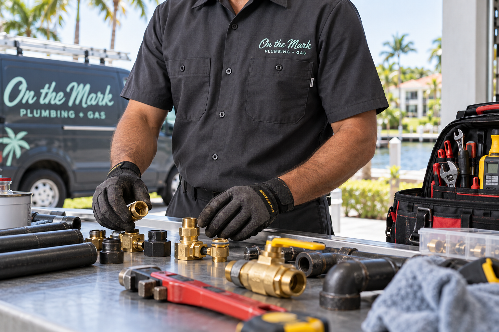

Plumbing
Speak with the team about your specific needs and next steps.

NORTH PALM BEACH PLUMBING + GAS
Plumbing, piping, gas service conversations and water heater work, presented with precision.
Call about your project ↗REPUTATION SNAPSHOT
5.0 / 533 Google-linked reviews in the research snapshot. Ratings and counts may change; confirm on the business profile.
View review source ↗WHAT WE CAN TALK THROUGH
Start with the job at hand. The team can confirm scope and scheduling by phone.
Speak with the team about your specific needs and next steps.
Speak with the team about your specific needs and next steps.
Speak with the team about your specific needs and next steps.

BRAND CONCEPT / WORKWEARA STRONGER FIRST IMPRESSION
Make the name a visual device and foreground precise project work.
Based in North Palm Beach, On the Mark Plumbing and Gas Services, LLC can use this page to show what they do and make the next conversation simple. Confirm service radius, availability and project details directly with the team.
Speak with the team ↗A SIMPLE NEXT STEP
Share the address and a brief description of the issue or project.
Confirm service fit, timing and any details needed for an estimate.
Arrange the appropriate visit or project conversation directly.
LOCAL CONNECTION
Ask about your address and the work you need when you call. Service radius and availability should be confirmed directly.
LET'S TALK PLUMBING
A quick call is the clearest way to discuss your job.
Call about your project ↗(561) 329-7645